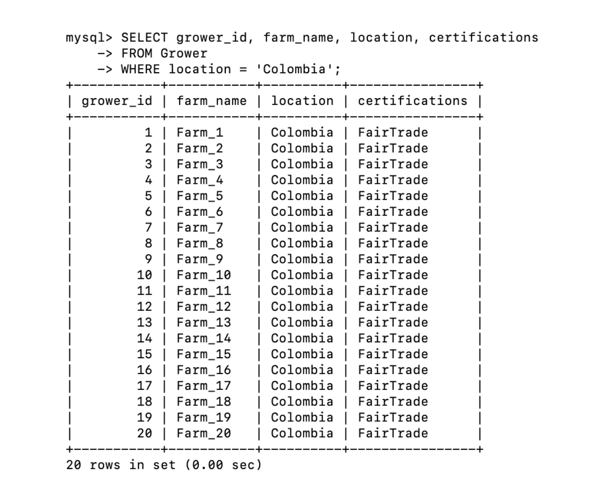
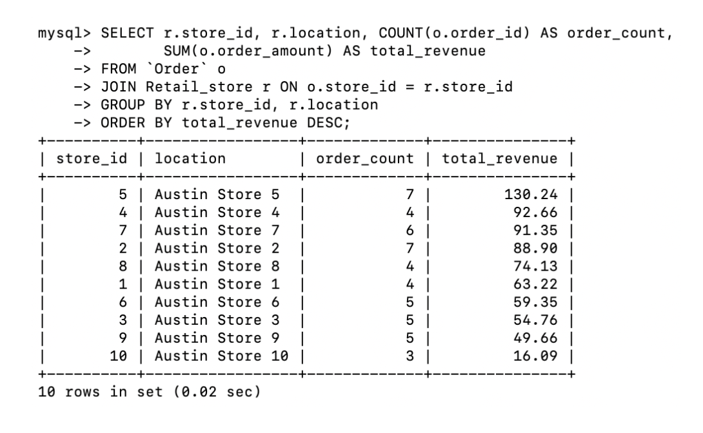
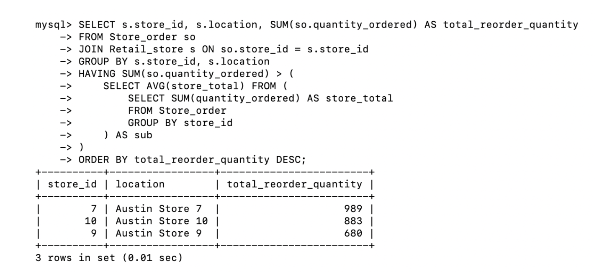

Database Views




Impact
Built a clean schema and reporting views to support inventory visibility, vendor performance tracking, and cost optimization.
Highlights
Normalized core entities to 3NF, linked suppliers to distribution nodes, and wrote analytical queries to surface bottlenecks, order volume, and cost drivers.